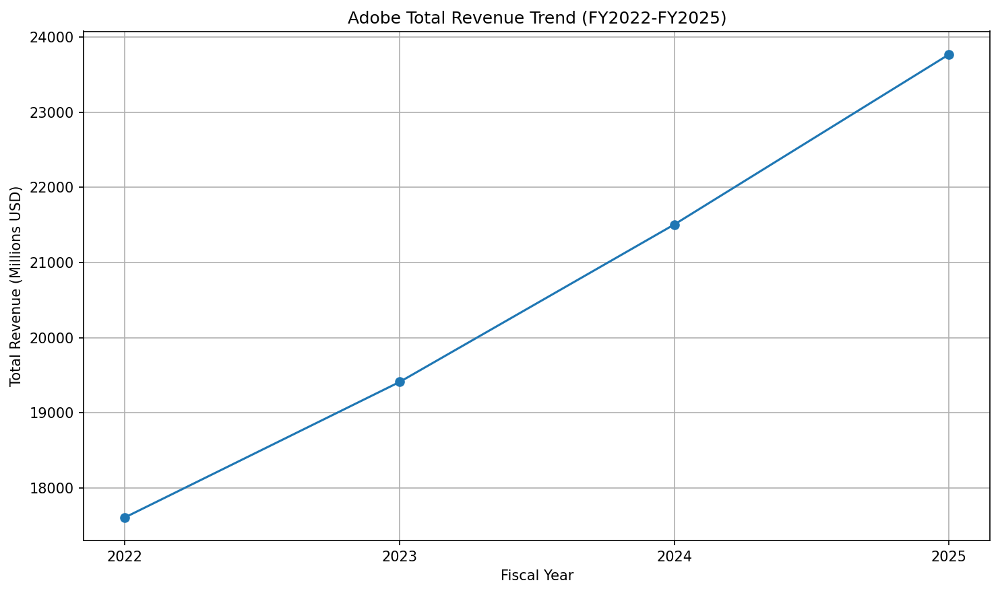
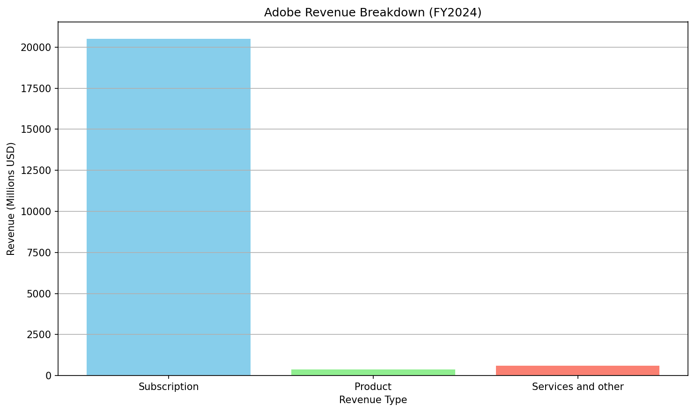
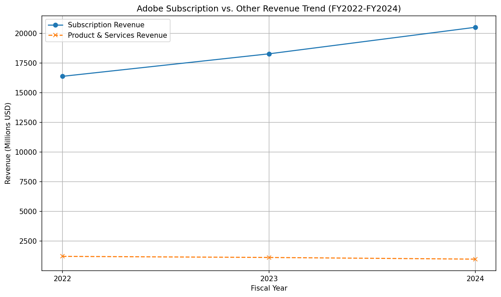
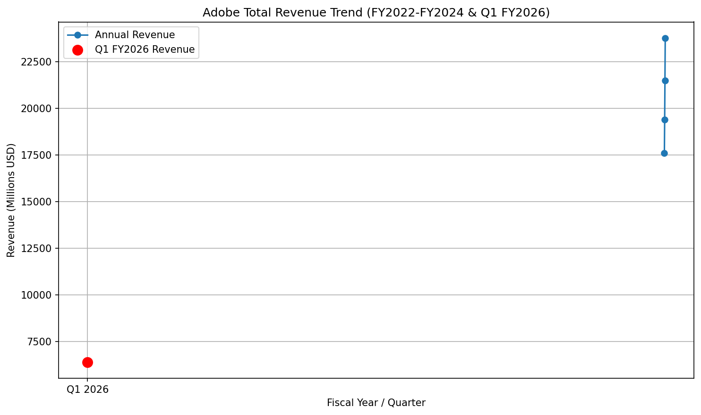

What is our current revenue trend?
Adobe's revenue has demonstrated a consistent and positive growth trend.
Here's a summary of the revenue figures:
The company's subscription revenue is the primary driver of this growth. Adobe is well-positioned for continued profitable growth, particularly with advancements in AI-powered capabilities.
Sources: * Adobe_10K_FY2024.pdf — page 55 * Adobe_10K_FY2023.pdf — page 53 * [WEB SOURCE 1: http://bullfincher.io/companies/adobe/overview] * [WEB SOURCE 2: https://www.macrotrends.net/stocks/charts/ADBE/adobe/revenue] * [WEB SOURCE 3: https://stockanalysis.com/stocks/adbe/revenue/] * [WEB SOURCE 4: https://finance.yahoo.com/news/adobe-inc-adbe-q1-2026-030543245.html]



